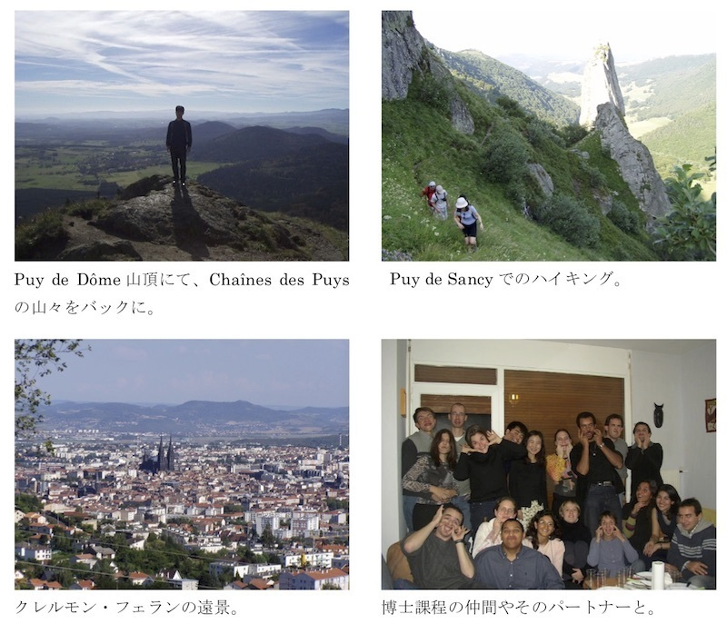

2018年06月01日
昔、フランス政府の奨学金をいただいてフランスに留学していましたが、この関係で留学の経緯や当時の生活・研究についてとあるところに寄
稿しました。せっかくなので、ここにも掲載しておきます。なお、フランス政府給費留学生制度
についてはこちら参照。
ーーーーー
自分の礎となったフランス留学
福島 洋
留学先：
ブレーズ・パスカル大学（現クレル
モン・オーベルニュ大学）（クレルモン・フェラン）
Université Blaise Pascal (現
Université Clermont Auvergne, Clermont-Ferrand)
留学期間：2002年10月～2006年3月
１． フランスに留学することになったい
きさつ
自分のキャリアを振り返ってみる
と、最初の大きな節目は博士前期課程の修了前後にあった。修士論文研究に取り組んでいた当時、博士後期課程に進学したい気はしなかったも
のの、かと言ってそのまま就職するという選択肢も何となくピンとこなかった。そのような時、縁あって、修士号取得直後にウィーンにある包
括的各実験禁止条約機構（CTBTO）という国連機関に就職することになった。CTBTOでは地震の震源決定が仕事だったから、それまでに得た知識や
スキルを活かしつつ学問の外の世界をのぞくことができ、また、将来についてじっくり考えることができた。最初の段階から、何年か働いて生
活資金を貯めたあとに大学に戻り、Ph.D.を取得するということを選択肢の一つとして考慮に入れてい
た。CTBTOでの最初の一年ほどは、新しく覚えることが多かったが、仕事
を覚えるにつれてだんだんと刺激が少なくなってきた。仕事で毎日地震波形を眺めているうちに、「なぜこうなるだろう」をもう一度とことん
追求してみたいと思い、博士（後期）課程に進学することにした。
火山の研究がしたいと思い、出身
研究室の火山学を専門とする先生にアドバイスをもらいながら、ヨーロッパやアメリカで面白そうな研究をしている研究者を探した。候補とな
る研究者の論文をいろいろと読んだ結果、フランス中部の街、クレルモン・フェランのUnité
Mixte de Recherche（フランス国立科学研究センターや大学等の複数機関で共同運
営される研究所）であるマグマ火山研究所（Laboratoire
Magmas et Volcans）のValérie
Cayol博士のところで研究したいと思い、
「あなたのところで研究がしたい」とメールを書いた。そのあと、いろいろなやり取りをし、奨学金を探し、フランス政府奨学金に応募した。
国連のビルの中で昼休みに行われていたフランス語のレッスンを受講し、フランス語を勉強した。運よく、奨学生の合格通知をいただくことが
でき、これをもってフランスに留学することが決まった。
ウィーンでの生活から、わからな
い言葉や違う文化のなかで暮らすことに慣れていたので、フランスに行くという決断をするのに心理的なハードルはなかった。ウィーンに行っ
ていなければ、おそらくフランスに行きたい、とは思っていなかったと思う。ある環境に身を置いてみると、次のステップが見えてくるもので
ある。また、特に国連は、「一定期間あるポストで仕事をして、その経験やスキルを活かして次の新たな仕事をする」といった働き方をしてい
る人々が多く集まっているところで、そのような環境にいた自分にとっては、自分の決断は全く自然なものだった。（余談だが、社会人として
最初に経験したことは後のキャリアに大きな影響を与えるようで、フランス留学後も、３年程度ごとに場所や職種を変えることに。。。）
２．クレルモン・フェランでの生活
クレルモン・フェランでの生活
は、割とスムーズに始めることができた。その要因としては、社会経験をある程度積んでいたということが大きかったと思う。一度就職したこ
とは、回り道のようで、結果的には大変よい選択であった。あと、当時私はすでに結婚していたので、妻と一緒だったということも大きかっ
た。滞在許可証（Carte
de Séjour）の手続きには大いに時間を取られたが。。。
クレルモン・フェランは、オーベ
ルニュ地方の中心都市でそれなりに大きく、生活に不便はなかった。ヨーロッパの歴史のある街には、昔からの石畳の道や伝統的な様式の建物
から成る「歴史地区」が中心部にあるが、クレルモン・フェランも、黒っぽい壁をもつ大聖堂（黒っぽいのは、溶岩から切り出された石材を使
用したため）を中心に、雰囲気のよい歴史地区があった。治安もよく、妻とのショッピングやカフェもよく楽しんだ。週末の朝は、妻と二人で
散歩がてらお気に入りのパン屋にバゲットを買いに行き、帰ってきてからベランダ等でゆっくり朝食を食べるのが通例だった。郊外にもスー
パーや家具屋等の大型店、新鮮で安い食材を売る店、大変おいしい中華料理店などがあり、便利かつ精神的に豊かな生活を送ることができた。
クレルモン・フェランの西側に
は、シェーヌ・デ・ピュイ（Chaînes
des Puys）と呼ばれる南北に列を成す単成火山群がある。その火山群の
中央部には、パスカルが実験を行ったことで知られるピュイ・ド・ドーム（Puy
de Dôme）や、飲料水で有名なVolvic村（タダで水を
汲める！）がある。さらに、クレルモン・フェランの南側には中央高地（Massif
Central）があり、火山がつくった地形と豊かな自然が広がっている。
アウトドアが好きな友人に誘ってもらったりして、ハイキングやロッククライミングなども楽しんだ。
博士課程の３年目の途中、ちょう
ど博士論文の執筆に取り掛かった頃に、一人目の子供が生まれた。妻と一緒に毎回定期検診に行き、出産前講習等も一緒に受けたが、出産に関
して大変なこと・困ったことは全く記憶にない（大変なことは忘れている可能性はある）。ただし、産まれた後の子育ては大変であった。私の
博士論文執筆が佳境に入ってきていたので、母や義母に手伝いに来てもらったりしたが、勝手がわからない国で、しかもこちらはフランス流の
子育ての方法を小児科で聞いてきたりしているものだから、大変な苦労をかけた。しかし、基本的に、フランスは子育てがしやすい国で、子育
てで楽しんだこともいっぱいあった。
３．学究生活・研究所の生活
研究テーマは、レユニオン島のフ
ルネーズ火山（Piton
de la Fournaise）において、噴火に伴う地面の変形から地下で起こったマグマ
の移動について推定するというものであった。当時、InSAR（「インサー」と読む）と呼ばれる、衛星で撮られた合成開口
レーダ（SAR）画像を使って地表面の変形を検出する手法が新たな技術とし
て使われ始めた頃だった。この手法を使うと、火山のあらゆる場所の変動を画像として詳細に捉えることができる。それまでは、地面に設置し
たせいぜい数個の機器の観測データしかなかったわけだから、InSARは大きな技術革新であった（なお、現在でも観測機器が設置さ
れていない火山は多数ある）。これに伴い、地下のマグマの動きを推定するための手法も、従来の大雑把なものではデータの質と量に見合わな
くなり、新たな手法の要請があった。私の研究上の主要なテーマは、指導教員のValérieが開発した数値解析手法と逆解析手法（データ（結果）から変
動源（原因）の推定をする手法）を組み合わせ、高品質なInSARデータから地下のマグマの移動に関する情報をいかに抽出する
か、ということであった。このテーマは、当初、指導教員のValérieが頭の中に描いていたテーマとは違ったが、快く私のやりたい
ことをさせてくれた。なお、Valérieとは、一週間に一回、進捗状況の共有とディスカッションをし
ていたが（ただし、途中の一年ほどは、彼女の産休につき必要最低限のメール連絡や数ヶ月に一度の相談のみであった）、私にとっては、自分
のアイディアをぶつけて心置きなく議論できる大変楽しい時間だった。最初の一年は英語、二年目はフランス語と英語半々、三年目はフランス
語で話した。
研究所には、博士課程の学生が20人ほどいたように記憶しているが、女子学生が７割ほどだった
と思う。お昼は、10人くらいで食堂に食べにいくことが多かった。できるだけ溶け
込んで交流したいと思い、努めて一緒に行くようにしていたところもある。おやつの時間に研究所内で集いお菓子を食べるようなこともよく
あったが（誰かが誕生日でつくってきたお菓子や、エピファニー（公現祭）のガレット・デ・ロワなど）、そのような場にもできるだけ参加す
るようにしていた。ただ、留学期間の最後のほうになっても、多人数の中の会話にはなかなかついていけなかった。昼食を一人で食べたいとき
は、近くのパン屋でバゲットのサンドイッチを買って食べたりしていた。個人を尊重する国柄なので、一人で行動していても疎外感を感じると
いったことはなかった。総じて、人間関係の面で、日本よりも後に留学したアメリカよりも過ごしやすかった。
CROUS（Centre
régional
des œuvres universitaires；学生の支援機関）の強力なサポートについても触れておきた
い。クレルモン・フェランのCROUSには、フランス政府留学生の担当としてベテランの女性職員が
いた。彼女は英語をまったく話さなかったので最初はコミュニケーションに苦労したが、いつも親身に相談に乗ってくれたり、話し相手になっ
てくれたりした。また、定期的にフランス政府留学生の交流会や旅行があり、フランスの伝統的な食事、ピレネー山脈への旅行、サンテミリオ
ンのシャトー巡り（もちろんワインの試飲つき）、ロックフォールのチーズ工場見学などと、文化的に豊かな経験をさせてもらった。当時、同
じフランス政府留学生として仲良くしていたシリアからのフランス文学専攻の留学生やイラクからの歯学専攻の留学生（クルド人）のことはた
まに思い出す。国で混乱に巻き込まれていなければよいとは思うものの、巻き込まれていなかったとしても祖国の不安定な現状に心を痛ませて
いるかと思うと、こちらも心が痛む。微力ながら、調和のとれた平和な社会のために、自分ができることをやりたいと思う次第である。
４．おわりに
フランスでの３年半の経験は、自
分が研究者として活動していくうえでの強みとなっているし、また、人間的な幅を広げてくれるものでもあった。特に社会人キャリアの最初の
時期にこのような経験ができたことは、大変幸運なことだったと思う。改めて、奨学金の支援をいただいたフランス政府に感謝申し上げたい。
本稿は、これから留学を考える若
い人の目にも触れることを想定して書いた。何からかの形で参考になればうれしい限りである。
本人紹介
最終学歴：パスカル大学博士課程修
了（2005年12月）
現職：東北大学災害科学国際研究
所・准教授
専門：測地学、地震学、火山学、災
害科学

Return to Yo
Fukushima’s website top page